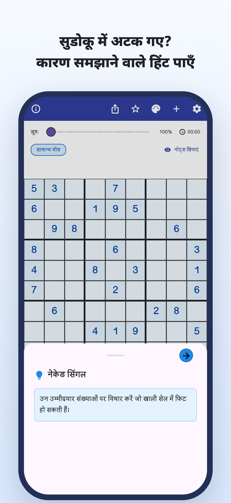
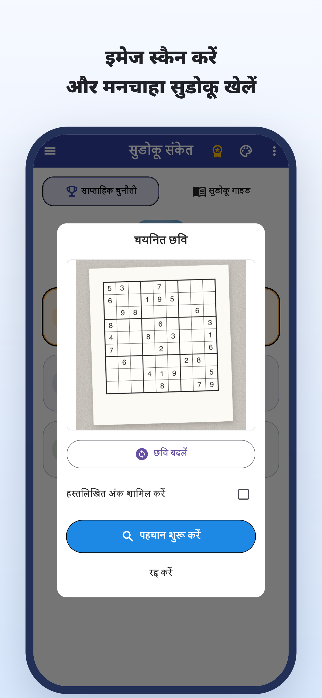
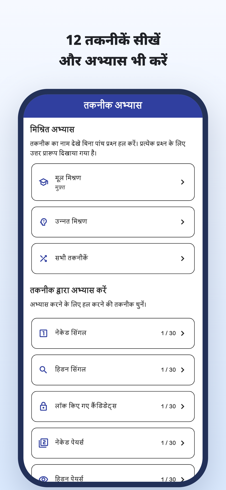
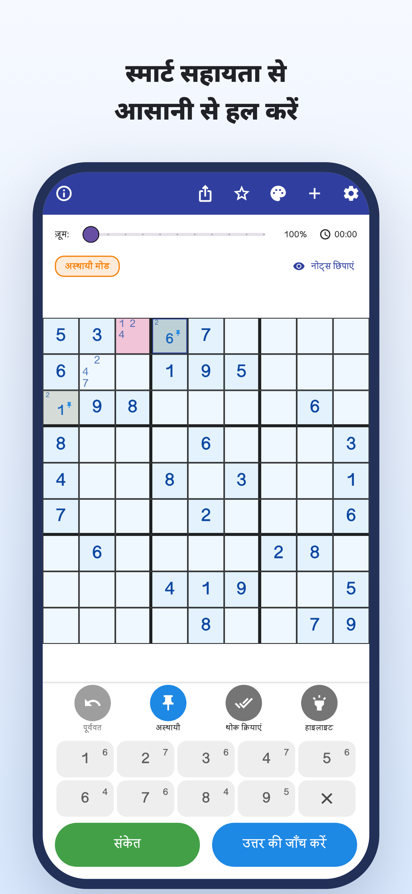
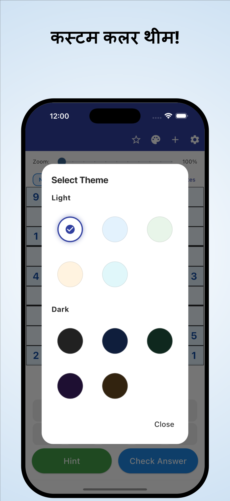

“अब कहाँ देखूँ?”
बार-बार ग्रिड जाँचते हैं,
पर उसी जगह अटके रहते हैं।
कैमरे से स्कैन करें · कारण सहित संकेत
अख़बार और पत्रिकाओं की पहेलियाँ स्कैन करें।
समझें कि कोई अंक क्यों सही है, फिर खुद हल करना जारी रखें।
iPhone और Android / मुफ़्त डाउनलोड · ऐप में खरीदारी





क्या खेलते समय ऐसा होता है?
बार-बार ग्रिड जाँचते हैं,
पर उसी जगह अटके रहते हैं।
वही अंक उस जगह क्यों आएगा?
हल की नकल करना काफ़ी नहीं लगता।
कागज़ पर हल कर रहे सुडोकू को
ऐप में आगे जारी रखना चाहते हैं।
अटकाव को अगले सुराग में बदलें
अख़बार या पत्रिका के सुडोकू को तस्वीर से पढ़ें और एक-एक अंक हाथ से दर्ज करने का काम कम करें।
तस्वीर से पढ़ेंकिसी चाल का तर्क पढ़ें और सिर्फ जवाब भरने के बजाय अगले कदम के लिए उसका उपयोग करें।
कारण सहित संकेतअलग-अलग तकनीकों की व्याख्या और अभ्यास देखें, फिर उन्हें खुद पहचानने का अभ्यास करें।
तकनीकों का अभ्यासउनके लिए जिन्हें खुद हल खोजने में मज़ा आता है
अपनी पहेली आयात करें और वहीं से आगे बढ़ें जहाँ रुके थे।
मुश्किल जगह का तर्क समझें और खुद आगे बढ़ें।
शुरुआती खिलाड़ियों और अगली तकनीक सीखने वालों के लिए।
पढ़ें · आज़माएँ · अभ्यास करें
ब्राउज़र में शुरू करें।
गाइड पढ़ें या पूरी पहेली खेलें।
संभावित अंकों के नोट्स से तकनीकों की व्याख्या और अभ्यास तक।
ज़रूरत पड़ने पर संकेत लेकर पूरी पहेली हल करने की कोशिश करें।
नियम और सुरागों को जोड़ने का आनंद जानें।
नीली सीमा वाले खाने को देखें और संकेत खोलें।
अगली चाल का संकेत
खाली खाने के संभावित अंक जाँचें।
यह एक चाल आज़माने का वेब उदाहरण है। ऐप का प्रदर्शन अलग है।
जब सुडोकू में अटक जाएँ।
सुडोकू संकेत डाउनलोड करें
मुफ़्त डाउनलोड · ऐप में खरीदारी
ऐप को मुफ़्त डाउनलोड करके आज़मा सकते हैं। संकेत, उत्तर की जाँच और तस्वीर पढ़ने की उपयोग सीमाएँ हैं; कुछ उपयोगों के लिए वीडियो विज्ञापन देखना होता है।
Premium मासिक या वार्षिक सदस्यता है। इससे विज्ञापन हटते हैं और असीमित संकेत तथा उत्तर जाँच मिलती है। Premium में भी तस्वीर पढ़ने की सीमा रहती है। कीमतें और शर्तें ऐप में देखें।
सुडोकू की तस्वीर आयात करें। शुरू करने से पहले पहचाने गए अंक जाँचें और गलतियाँ सुधारें। सामान्य 9×9 सुडोकू समर्थित है।
ऐप में शामिल पहेलियाँ खेल सकते हैं और तकनीकों की व्याख्या तथा अभ्यास इस्तेमाल कर सकते हैं। कुछ पहेलियों और अभ्यासों के लिए Premium चाहिए।
यहाँ एक चाल के डेमो के अलावा ब्राउज़र में पूरी पहेली खेल सकते हैं और तकनीकों की गाइड तथा अभ्यास देख सकते हैं।
सुडोकू मार्गदर्शिका